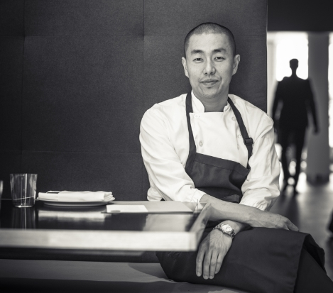
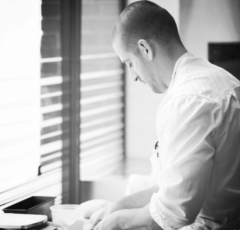
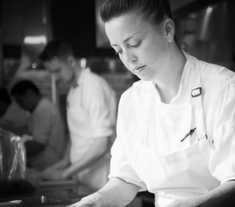
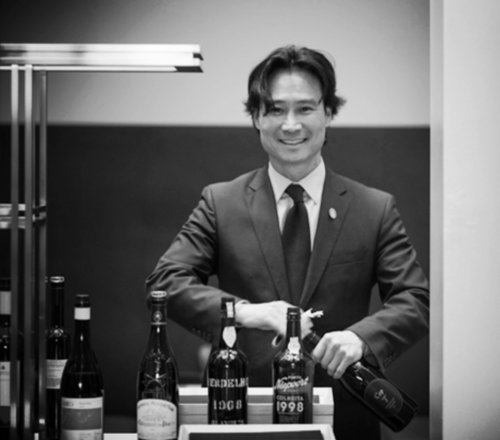

Corey Lee is the chef and owner of Benu, where he leads a team of
professionals dedicated to providing Benu's guests with the highest
level of food and hospitality. His career has spanned nearly 20 years
of working at some of the most acclaimed restaurants in the world,
including a tenure as head chef at The French Laundry. In recognition
of his work and influence, he became a goodwill ambassador for the
city of Seoul, Korea, an honor given to leaders in various fields.

Brandon Rodgers
Chef de cuisine
As Benu’s Chef de Cuisine, Brandon works closely with Corey, managing
all aspects of the kitchen. He started his career at El Bizcocho led
by Gavin Kaysen, with whom he represented the U.S. in the Bocuse d’Or
competition, and later pursued a more formal culinary training at the
New England Culinary Institute. After graduating, he worked at Daniel
in New York City and The French Laundry in Yountville, California
before becoming opening Sous Chef at Benu. In 2013, Brandon was named
Rising Star Chef by the San Francisco Chronicle.

Courtney Schmidig
Head Pastry Chef
At the beginning of 2013, Courtney, a Bay Area native, joined Benu’s
team as Pastry Chef. She started her career with a pastry degree from
the CIA, Greystone. Most recently, she was Head Pastry Chef at The
French Laundry in Yountville, California, a position she assumed while
working with Corey when he was Chef de Cuisine. During her seven year
tenure there, she also staged at various three Michelin star
establishments such as Arzak, Le Meurice and The Fat Duck.

Yoon joined Benu with more than 20 years of experience in the
hospitality industry throughout California. Previously, he was
Sommelier at La Toque, during which time, the restaurant was
accredited with having one of the “best food and wine pairing
programs” in the U.S. by Food & Wine Magazine, and earned a James
Beard Award nomination for Best Wine Service. In 2012, Yoon passed the
Master Sommelier Examination making him one of fewer than 200 Master
Sommeliers worldwide.